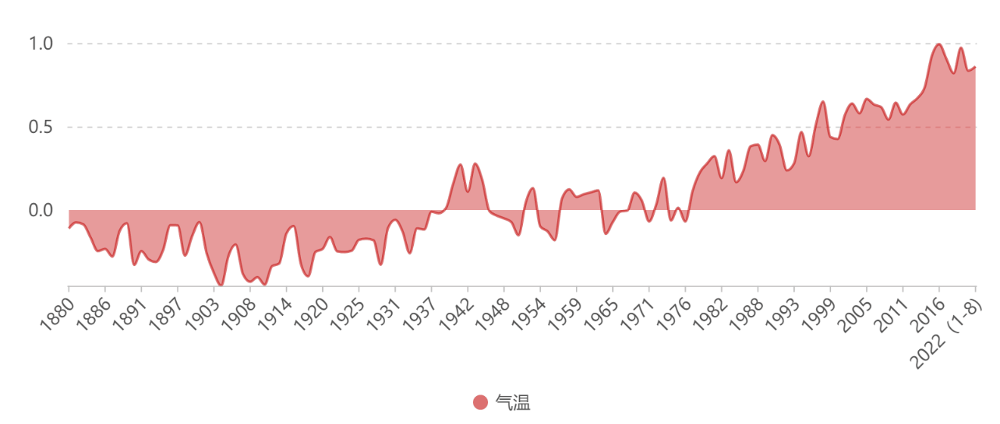

行走在大街小巷中，“保护环境，人人有责”这样的标语和横幅随处可见。绿色、环保、减排等概念在十几年前或许仍是新词汇，但是在当下已经变成人们生活中常识性的事物，也是中国未来发展必不可少的一环。或许我们也可以这样说，未来的中国将会把“低碳”放在发展的核心位置，我们将步入一个“低碳”引领的时代。
自1999年以来，中国便开始了对于生态恢复和保护的努力措施。虽然许多生态工程最初并不是为了固碳或缓解气候变暖所建立了，但却不可否认它们对“减碳”的重要贡献。几十年过去了，中国的“节能减排”事业没有被遗忘或放弃，而是一路高歌猛进，如今更是被推上了历史的新舞台。
2020年，中国经济工作会议将“做好碳达峰、碳中和工作”作为2021年的重点任务之一。在第七十五届联合国大会上，中国向世界承诺：力争在2030年前实现碳达峰，2060年前实现碳中和。
碳达峰和碳中和也被称为双碳战略。碳达峰是在某一时间点，人类活动造成的温室气体排放量达到峰值不再增长，然后逐步回落。碳中和是一段时间内，国家、企业、产品、活动或个人直接或间接产生的温室气体排放总量，通过植树造林、节能减排等形式进行抵消，达到相对“零排放”。
简而言之，碳达峰是碳排放达到峰值且不再增长，而碳中和是排碳与固碳减碳的水平相当。只有经过了碳达峰才能逐步实现碳中和。
从碳达峰到碳中和的发展过程，就是经济增长与温室气体排放从相对脱钩走向绝对脱钩的过程，表现为碳排放增长水平由快到慢不断减缓，排放量在年增长率为零的拐点处波动后持续下降，直到人为排放源与吸收汇相抵。
“双碳”战略有利于引导技术创新，推动产业结构和能源结构调整，提高经济全球竞争力。在此目标下，我国持续倡导绿色、环保、低碳的生活方式，努力兼顾经济发展和绿色转型同步进行。
中国不是空口说大话的“客里空”，而是身体力行的实干家。对于“双碳”的实现，中国给出了自己的目标和规划。2025年单位国内生产总值二氧化碳排放较2020年下降18%，2030年较2005年下降65%以上；2060年实现碳中和。一方面，这是中国在世界舞台上应对气候变化的庄严承诺；另一方面，“双碳”目标对我国的绿色发展之路提出新的要求，这将成为未来数十年内经济社会发展的主基调之一。
气候变化问题
自
18世纪以来，英国率先举起了工业化的旗帜，开启了蒸汽时代，之后工业化的浪潮迅速地席卷欧洲大地，进而扩大到全世界，最终建立以煤炭、冶金、化工等为基础的工业生产体系。在高楼林立的繁华都市里，在如火如荼的工业发展下，GDP一直成为各个国家争先恐后追赶的目标，在这些繁华景象的背后，被忽视的是工厂滚滚的浓烟、汽车喷薄的尾气、砍伐殆尽的森林....终于人类发现工业化是以生态系统的巨大破坏为代价的。1972年各国在瑞典召开了“人类环境会议”，并发布了《人类环境宣言》，指出：“保护和改善人类环境是关系到全世界各国人民的幸福和经济发展的重要问题，也是全世界各国人民的迫切希望和各国政府的责任。”
环境破坏直观地反映在气候上。近一百年是世界工业化发展的时期，也是全球气候快速升高的时期。自1880年以来，地球的平均表面温度每十年上升
0.07℃。随着工业化的推进，气温升高的速度显著增加，1981年以来达到了0.1℃，是1880年的1倍多。1975年，著名经济学家威廉·诺德豪斯指出，如果全球平均气温上升2℃，气候变化将会以过去数十万年未见的方式出现，并对全球经济造成重创。根据WMO发布的《2020年全球气候状况》指出，2020年全球平均温度比工业化前上升了大约1.2℃。气候变暖的形势前所未有有地严峻。
1880-2022年全球地表气温变化
数据来源：World Meteorological Organization

气候的变化对于全球的生态系统的影响可谓“牵一发而动全身”。温度升高，两极的冰川开始融化，北极熊等极地动物丧失栖息地，濒临灭绝。和20世纪80年代早期相比，极地冰盖大约了缩减了近1/2个中国。大量融化的冰川使得海平面上升。1900年以来，全球海平面平均上涨了19厘米，这也使得很多临海国家和地区面临被淹没的危险，图瓦卢国民正是因此不得不“背井离乡”，寻找避难地。
陆地、淡水、沿海和海洋生态系统都正受到气候变化的影响。预计在升温1.5℃时，珊瑚礁将失去70%至90%的原有覆盖区域，在升温2℃时将失去99%以上。到21世纪末，目前20%至90%的沿海湿地面临消失的风险。
全球气候变暖、气温升高也加剧了气候系统的不稳定性，极端气候事件频发。2021年7月，欧洲地区遭遇特大洪水，造成数百万人死伤；中国河南出现历史罕见的极端强降雨，造成全省1290余万人受灾；中国南部及西北地区却连续8天高温预警，“热得发紫”。此外还有超强寒潮、台风、海啸等等罕见天气事件发生频率在升高，造成了不可估计的人身和财产损失。
造成气候变暖的“罪归祸首”就是温室气体的排放。温室气体主要包括《京都议定书》限排的二氧化碳、甲烷、氧化亚氮、六氟化硫、氢氟碳化物、全氟化碳）、三氟化氮，以及《蒙特利尔议定书》限排的消耗臭氧层物质。其中，二氧化碳的占比高达77%，来自化石燃料排放（57%）、砍伐森林和生物质腐化等（17%）及其他（3%）。
在全球发展的历史中，碳排放量在工业革命时期急剧增长，全球的气温也是在这一时期呈现显著增长趋势。为了抑制碳排放的增长，保护人类生存环境，中国提出了自己的对策——“双碳”战略。
国际责任与国内发展
2015年，《巴黎协定》达成。其核心目标在于加强对气候变化所产生的威胁做出全球性回应，实现与前工业化时期相比将全球温度升幅控制在2℃以内；并争取把温度升幅限制在1.5℃。中国作为最大的碳排放国，提出“双碳”战略是大国的责任和担当，也是稳步推进“人类命运共同体”的重要一环。
2019 年世界各地碳排放量
数据来源：WRI CAIT(部分缺失)
作为人口大国、资源少国，我国目前原油、天然气等能源需要大量进口，产业结构能耗和污染过大，能源结构的转型和绿色产业的发展是未来的大趋势。“双碳”对我国而言是一个机遇，实现碳中和将有利于中国经济增长方式更加绿色和可持续。
实现碳中和的目标，需要从“碳源”和“碳汇”两个方面着手。碳汇是通过植树造林、农田管理、植被恢复等手段，利用植物光合作用吸收二氧化碳，从而将其固定在植被和土壤中，减少空气中二氧化碳的浓度。增强碳汇的手段中林业碳汇以其可再生、环保效益高、成本低等优势，成为最具潜力、最为有效的固碳途径。中国切实加强生态保护，扩大森林面积、提高森林储备量，也取得了巨大的成效。
根据2019年第九次全国森林资源清查结果显示，与第一次清查结果（1973-1976年）相比，全国森林面积从12.18亿亩增加到22.04亿亩，森林覆盖率从12%增加到22.96%，森林蓄积量增加到175.6亿立方米，全国人工林面积达到12亿亩，居世界首位。森林资源储存了91.86亿吨的碳，为我国的固碳释氧、净化大气、固沙防尘做出了突出贡献。
中国在各地区增加植被覆盖率的措施不尽相同。针对南方地区水土流失、过度开发、滥砍滥伐的问题，实施退耕还林。在长江上游、黄河上中游地区全面禁止天然林商业性采伐。福建、江西、云南、海南、广西、贵州、浙江等省份的森林覆盖率达到了60%。北方也兴起了三北防护林工程建设，40年过去了，防护林已初具规模。原本水土流失严重的黄土高原地区新增造林779.1万公顷，昔日的西北高原沙荒地变成了高原林海。
“减碳”行动从来不只是一个国家方面的政策，在细微处，我们可以看到个体和企业的共同努力。2016年，支付宝上线“蚂蚁森林”，5年来蚂蚁森林参与到全国11个省份的生态修复工作，累计种下3.26亿棵树。2021年菜鸟联合天猫共同发起了双11“回收快递包装，全民领鸡蛋”的活动，共计480万消费者线上线下参与绿色回收，发生超18亿次绿色行为，菜鸟和商家、消费者，一同为社会减碳5.3万吨。越来越多的人通过电子支付、公交出行、循环利用纸张等等方式践行“低碳生活”的理念，为中国的“减碳”事业贡献自己的星星之火。
低碳，并非盲目的克制，而是创造更多可能。科技，不是破坏自然的工具，而是开创绿色的未来。中国不仅需要“减碳”，实现碳中和的目标，还需要抓住这个机会，淘汰高污染高耗能的产业，发展非化石能源，优化能源结构；利用新能源，助力现代农业，推动农村发展；发展新能源汽车，降低燃油车比重。
能源结构：非化石能源能源占比稳步提升
长期以来，中国的能源结构都是以化石能源为主，特别是煤炭，占比超过一半。我国的天然气、原油等化石燃料多依靠进口。为保障我国的能源安全，夯实能源供应基础，能源结构多元化势在必行。化石燃料的燃烧会释放大量的温室气体，加剧气候变暖趋势，为力争在2030年前实现碳达峰，需要减少化石燃料占比，提升清洁能源占比。
中国持续推进水电、风电、太阳能发电、光伏发电、核电的稳步发展，能源结构持续优化，低碳转型成效显著。“十三五”规划期间，能源消费结构中煤炭占比较2015年，下降了7%，非化石能源占比从2015年的12%增加至15.9%。
渔光互补：盐碱地化身绿色动力
山东省北部的滨州市拥有着漫长的海岸线，海边的盐碱地使得这里无法种植粮食作物，但却很适合发展鱼虾养殖业。国内单体规模最大的“渔光一体”项目正坐落于当地的沾化区。智能光伏产业使得这块占地7800余亩的水域实现了年均上网电量达到4亿千瓦时的壮举。硕大平整的光伏板正好遮挡夏季烈日，让盐田的水温比传统鱼塘低上近2摄氏度，为鱼虾营造了良好的避暑胜地。浩浩荡荡的水面，水上成片的光伏板映射着阳光熠熠生辉，水下塘中鱼虾活蹦乱跳。原本寸草不生、颗粒无收的盐碱地一跃变成了寸土寸金的“聚宝盆”，这才是“绿水青山就是金山银山”最有力的见证。
“水上产出清洁能源，水下产出健康产品“的“渔光一体”项目也不只在沾化区发光，而是遍地开花。江苏泗洪、如东、扬中，江西南昌、安徽怀宁、和县，广西钦州、东兴，广州台州等全国20多个县市建设了超过60个以“渔光一体”为主的光伏发电基地，电网规模超过3GW。可见，全国各地都唱起了“渔光新曲”，现代农业、渔业与智能光伏产业有机结合，共同助力新农村三产发展，推动农业朝着科技化、高效化、智能化的方向迈进。
交通运输：新能源汽车方兴未艾
近些年来，新能源汽车逐步进入人们的视野中，成为很多人出行的“代步工具”。随着免征车购税政策延续至2023年底尘埃落定，新能源汽车发展再迎利好。从销量上看，新能源汽车销量持续增长，2020年达到136.73万辆。根据中汽协发布的数据，2022年上半年，新能源汽车销量为260万辆，国内汽车市场占有率达到21.6%。
新能源汽车销量中纯电动的份额最大，稳定在80%左右。汽车按照使用场景分成客运和货运，客运场景下包括乘用车和客车。纯电动汽车通过实用蓄电池供电驱动，受制于电池能量密度，续航性堪忧，更适合于市内短距离的通勤，很多沿海一线城市公交纷纷试用新能源汽车。
当前的新能源汽车也存在未解决的问题。由于尚未形成完整的产业链和行业规则，电池的规格难以统一。目前换电站的成本在500万元左右，建站成本太高，依靠个体车辆换电难以支撑。解决这些问题，需要坚持科学发展观，循序渐进，稳步推进。国家对于新能源汽车产业给予了大量的财政支持和政策支持，针对不同的车型采用不同的补贴标准，推动公共机构带头使用新能源汽车，鼓励充电站的建设等。
不止是现代农业、交通运输和新能源，碳中和的实现还与金融市场、材料行业、基因编辑等等产业相互联系。“双碳”从来不只是一个环保问题，也是发展问题。未来的中国，“双碳”将C位出道！